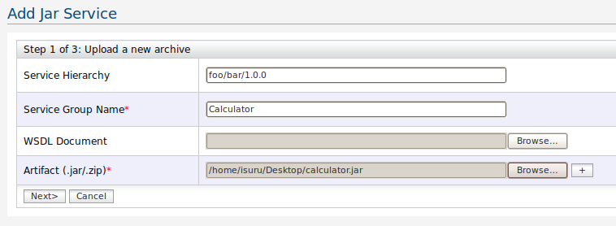
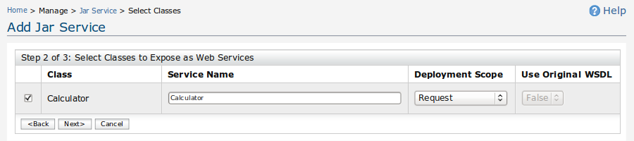
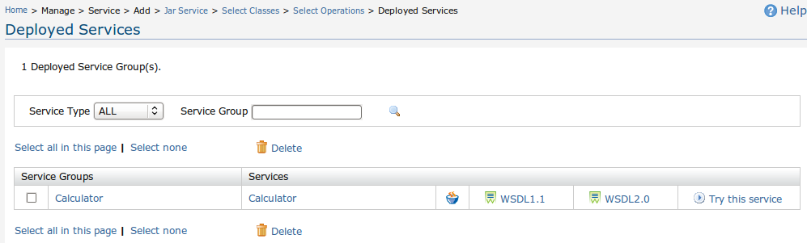
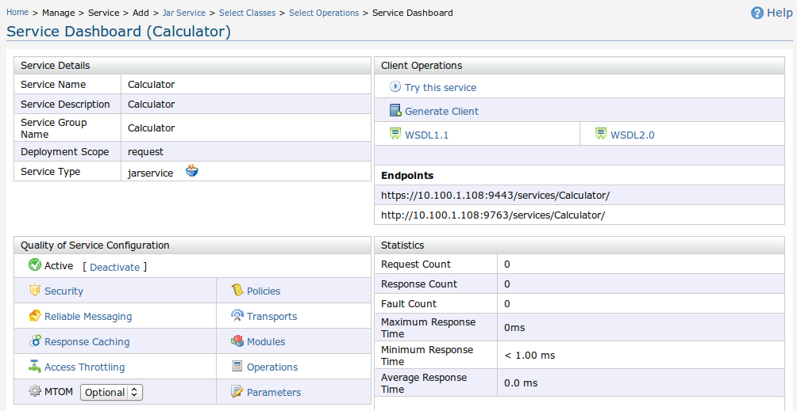

This document describes how the JAR services wizard can be used for creating Axis2 Web services from a JAR file. We will show how a regular jar file, calculator.jar, is uploaded & converted into an Axis2 service archive which exposes an Axis2 Web service.
Provide the hierarchical path of the service. This is optional. If you want to manage services separately, specifying a heirarchy is important. This allows you to customise your service EPR as you wish. And also it allows you to manage multiple versions of the same service changing only the business logic.
Example: Consider a service "Version"
If no service hierarchy -> EPR is ../services/Version
With service hierarchy foo/bar/1.0.0 -> EPR is ../services/foo/bar/1.0.0/Version
Then Specify a name for the Axis2 service group to be created, and then select one or more regular JAR files to be uploaded from the local file system, and click Next. You could also specify a WSDL that can be associated with your services. In this example, we will specify the 'Service Group Name' as 'Calculator', and select the calculator.jar file from the local file system.

Figure 1: Specifying service archive details
If Step 1 was successful, you will be shown a screen which lists all the classes in the JAR files you uploaded in Step 1. Select one or more classes that you would like to be exposed as Web services. You can specify the following properties under the selected class.
After selecting the classes, Click Next.

Figure 2: Select classes
In this step, you will be shown the set of classes you selected in Step 2, as well as the respective operations in each of those classes. Here, you can select the methods in those classes which need to be exposed as Web service operations. By default, all methods are selected. Unselect the operations that you do not wish to be exposed as WS operations and click Finish.
Figure 2: Select Operations
If you were able to complete Step 3 successfully, you will be taken to the 'Service List' page. Here you will see a message saying that the services that you created using the JAR service creation wizard will be available in a few seconds. After a few seconds, refresh this page, and you should be able to see the services you created being listed on this page.

Figure 4: View Service List
Click on a service that you created to view its information.

Figure 5: View Service Information
Click the 'Try this service' link for this service, and invoke the service using the 'Try It' user interface. if you were able to successfully invoke your services, it means that the service has been created and deployed successfully.

Figure 4: Try the Service